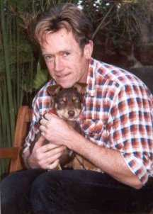

|
Paul Collins Information and Links

Anthologies Edited by Paul Collins
Paul's Web Site
Paul Collins - a profile
"Australia is not the science fiction capital of the world; in fact we are probably not even
on the map. This unfortunate fact would change if we could produce more writers like Paul
Collins." Michael Hanrahan, Australian Book Review.
PAUL COLLINS (1954- ) was born in England, raised in New Zealand and moved to Australia in 1972.
His first published work was the Western novel Hot Lead-Cold Sweat (1975). That same year, in
order to support himself so that he could write, Collins launched Void magazine, the first professional
science fiction magazine Australia had seen since the demise of the joint Australian and
British production Vision Of Tomorrow. Collins edited and published five issues of Void between
August 1975 and March 1977, and while it only covered costs, the magazine was instrumental in
encouraging lapsed writers Wynne Whiteford and Jack Wodhams to take up writing again, as well as
encouraging a new generation of Australian science fiction writers and readers.
In 1978, Collins moved from magazine to book publishing, initially with the Worlds original anthology
series, but later with a series of original Australian science fiction and fantasy novels. In 1981
Collins was joined by Rowena Cory (A.K.A. Cory Daniells) who
painted many of the covers for their books, and Cory and Collins went on to publish fourteen
Australian science fiction and fantasy novels by authors such as Wynne Whiteford, A. Bertram Chandler,
Jack Wodhams, Keith Taylor, Russell Blackford and David Lake. With
the posthumous publication of Chandler's novel The Wild Ones, however, Collins decided
that publishing was interfering with his own writing and he closed the business.
Collins pioneered the publishing of adult heroic fantasy in Australia and did much to raise the
profile of Australian genre writing. Many of the books and stories he published have been republished overseas.
He sold his first professional fantasy story in 1977 to the United States magazine Weirdbook
and by 1980 he had sold another eleven stories to magazines and books in Australia and overseas.
Collins has a black belt in both taekwondo and jujitsu, experience he puts to good
use in his recent, fast-paced cyber-oriented tales, which have culminated in the cyberpunk
novel Cyberskin. The latter has been published by clocktowerfiction.com
(USA), Hybrid Publishers (Australia) and Heyne Verlag (Germany). His stories have sold to a
wide variety of mainstream and genre magazines. The best of his work has been collected in The
Government in Exile, published by Melbourne's Sumeria Press in 1994. A later collection, Stalking Midnight,
has been published by cosmos.com in both POD and e-book.
Collins returned to editing in 1994 to compile Metaworlds, an anthology of
Australia's best recent science fiction, for Penguin Books. This was followed by
Strange Fruit, an anthology of dark fantasy tales with a literary bent. About
this time Collins began to develop an interest in young adult literature, in terms of
both his writing and editing. Angus and Robertson published his children's fantasy novel
The Wizard's Torment, which was likened by Sophie Masson (Reading Time, May
1996) to the classic fantasies The Worm Ourobouros and The Well at the World's End.
It has since been selected by the New South Wales Department of School Education for their
Bookshelf List, and extracts were published in School Magazine. Meanwhile, Collins compiled the
young adult anthology Dream Weavers for Penguin, the first original Australian heroic
fantasy anthology ever. This was followed by a similar book called Fantastic Worlds and the
Shivers series of children's horror novels from HarperCollins. Hodder published Paul's
next anthology, Tales from the Wasteland in 2000. Collins has also written under the
name Marilyn Fate and he and Sean McMullen have both used the pseudonym Roger Wilcox.
Collins' recent output has been mostly for children. Certainly the success of his YA anthology,
Dream Weavers, and possibly its sequel, Fantastic Worlds, has encouraged him to write
and edit for younger readers. His latest books, The Earthborn, a young adult science fiction
novel, has sold to TOR in the States, and his 100,000 word fantasy novel, Dragonlinks,
has been published by Penguin Australia.
He left the adult arena on a high: his story with Rick Kennett, 'The Willcroft Inheritance',
appeared in Charles L. Grant's Gothic Ghosts, TOR, 1997 and has been picked up
by Ellen Datlow and Terri Windling for their Recommended Reading List Year's
Best. Other recent stories appeared in Australian Short Stories and the award-winning
Dreaming Down-under.
To date, Paul has published over twenty chapter books, around thirty non-fiction hardcovers for
the education market, eleven anthologies, two collections of his own stories, edited the MUP
Encyclopaedia of Australian Science Fiction and Fantasy, over 140 short stories and a
handful of trade books.
Awards:
1980s - 2000s a handful of nominations for Best Editor and Best Short Fiction in the Australian
SF Achievement Awards
1999 - Winner William Atheling Award for work on The MUP Encyclopaedia of Australian Science
Fiction and Fantasy; Shortlisted for the Aurealis Convenors' Award.
2000 - The Dog King, Notable Book Children's Book Council; Shortlisted for the Clayton's Award.
2001 - (With Co-editor Meredith Costain) Winner the Aurealis Convenors' Award for
Spinouts Bronze published by Pearson Education. Joint winner was Shaun Tan for The Lost Thing.
2002 - Winner of the inaugeral Peter McNamara Award for life time achievement in SF.
Paul and partner Meredith Costain have written eighteen books on countries, all of
which have sold to American publisher Chelsea. Paul's eight books on martial arts also sold
into America.
Paul's recent work involves compiling seven books called Book People — Meet Australia's favourite children's authors
and illustrators. Macmillan will release these early 2002. He and Meredith Costain also
compile and edit the science fiction series Spinouts. To date there have been Spinouts
Silver and Bronze, with Sapphire in the making. They have also put together a series called
Thrillogy, for Pearson Education. Authors included are, among others, Richard Harland, Christine Harris, Glyn Parry,
Jackie French, Jenny Pausacker, John Heffernan, Allan Baillie, Justin D'Ath
and Robert Hood. Illustrators include Shaun Tan, Terry Denton, Craig Smith and Sally Rippin.
Paul also teaches writing in schools and has an increasing demand on his time for school visits.
He participates in the Nestle Writer Around Australia competition. A student from Paul's writing
workshop Master class, Jack Fox, was the year 2000 Grade Six National Nestle winner (there
were over 28,000 short story entries for Grades 5 & 6).
|